肥胖、脂肪激素與未來的糖尿病治療（Obesity, Adipokines, & Future Diabetic Therapies）
主講：Andrew Bugbee, DVM, DACVIM (SAIM)｜Texas A&M 首席醫療長暨臨床教授
2026 年 10 月 6 日｜VET-KU × Texas A&M 內科研討會｜場次 09
資料來源標記：
投影片（共 54 頁，標示頁碼）
🎤 課堂逐字稿（盡量完整保留；錄音從 p.4 開始）
📷 現場 現場拍攝
💡 補充 整理者補充（計算、交叉參照）
【更正】 逐字稿轉文字錯誤，以講義為準（完整列表見最後一節）
⭐ 必記原則
- 肥胖是慢性疾病，不是意志力失敗
- 是肥胖驅動過食，不是過食造成肥胖
- 過重 BCS 6–7（體脂 25–30%），肥胖 BCS 8–9（35–>40%）
- MCS 改用「正常／輕度／中度／重度流失」，依最嚴重部位評分
- 一天餵一次是肥胖的風險因子
- Leptin 阻抗：高 leptin ＋ 高食慾
- 先篩檢甲狀腺功能低下等共病
- 目標每週減 1–2% 體重
- 理想飲食：低脂、低熱量、高蛋白、高纖；罐頭優先
- 用克秤量食物，不要用杯子或量匙
- 零食 < 每日熱量 10%；建議要明確、堅定但有彈性
- 藥物是輔助，不是取代飲食與運動
核心觀念與總覽
▾場次資訊與架構
- 講者：Andrew Bugbee（DVM, DACVIM-SAIM），Texas A&M 首席醫療長暨臨床教授。也是 06 犬貓糖尿病營養的講者，06 中預告 BCS 與脂肪的影響會在這一場細談。
- 整場分成三部分：
- 認識肥胖：流行病學、定義、BCS／MCS、病理生理、飼主因素、後果、體重偏見（p.2–12）
- 肥胖的生物學：大腦獎賞系統、脂肪組織與脂肪激素、leptin 阻抗（p.13–23）
- 治療：減重計畫、飲食、飼主溝通、病例 Merlin（p.24–34），以及減重藥物與未來發展（p.35–53）
- 🎤 錄音從 p.4（肥胖的定義與評估）中段開始，p.1–3 只有講義內容。本場在 08 DKA、eDKA 與 HHS 之後；結束後休息到 12:35，接著是座談。
🎤 一句話掌握全場
"Obesity drives overeating. It is not the other way around."肥胖驅動過食，而不是過食造成肥胖。肥胖是一種要長期管理的慢性疾病，不是生活方式或行為上的失敗。
1. 流行病學與定義
▾肥胖：全球流行
- 人醫與獸醫都面臨的全球流行病。
- 影響全球 1/8 的人口（約 10 億人）。
- 美國的過重／肥胖比例：
- 成人：每 5 人有 2 人
- 犬貓：約 60%，也就是 5,600 萬隻貓、5,000 萬隻狗
Zomer et al. Biology 2024；Association for Pet Obesity Prevention 2022；Sunita et al. Obesity Science & Practice 2026
定義肥胖
世界衛生組織（WHO）
- 脂肪組織過度堆積
- 而且造成健康惡化
獸醫提出的分類（German 2025）
- 臨床肥胖：同 WHO，脂肪過多＋器官功能異常
- 臨床前肥胖：脂肪過多，但沒有器官功能異常
🎤 怎麼評估最好？目前還不清楚
- 候選工具：身體狀態評分（BCS）？肌肉狀態評分（MCS）？身體質量指數（BMI）？
- 在人身上都不完美：BMI 正常但脂肪過多的人，疾病風險更高。
- 內臟脂肪更能預測心血管代謝事件的風險。
| 過重 | 肥胖 | |
|---|---|---|
| 體脂率 | 25–30% | 35–>40% |
| 人 | BMI > 25 | BMI > 30 |
| 犬貓 | BCS 6–7 | BCS 8–9 |
- 🎤（錄音從這裡開始）脂肪特別集中在內臟脂肪組織的人，發生中風等心血管代謝事件的風險較高。
- 🎤 人的 BMI > 25 為過重，約等於體脂 25–30%；BMI > 30 為肥胖，約體脂 35% 以上。
- 🎤 獸醫病患的過重通常對應 BCS 6 或 6–7，肥胖是 BCS 8 或 9，體脂百分比一樣適用。
2. 身體狀態評分（BCS）與肌肉狀態評分（MCS）
▾🎤 BCS（AAHA 營養指引）
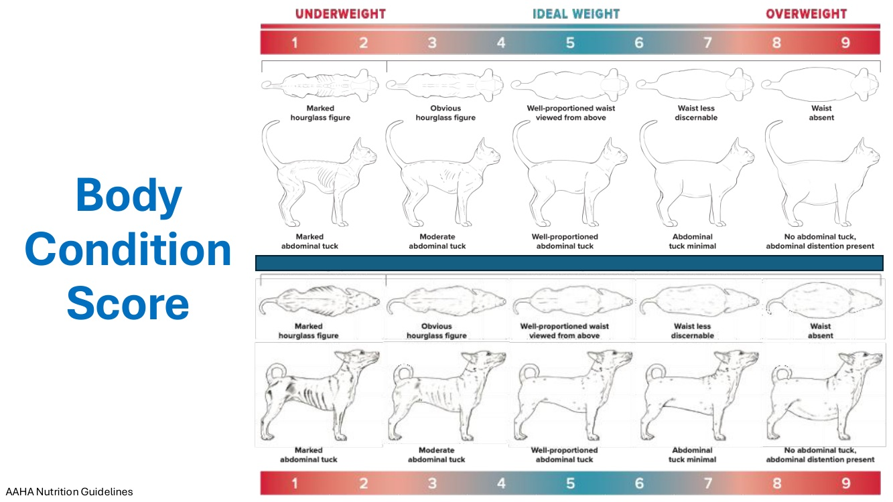
| 分數 | 俯視 | 側視 |
|---|---|---|
| 1–2 | 明顯沙漏形 | 明顯腹部上提 |
| 3–4 | 明顯沙漏形 | 中度腹部上提 |
| 5（理想） | 腰身比例良好 | 腹部上提比例良好 |
| 6–7 | 腰身不明顯 | 腹部上提很少 |
| 8–9 | 沒有腰身 | 沒有腹部上提，腹部膨大 |
- 🎤 提醒大家獸醫病患的 BCS 評分，等一下談飼主時會再提到。
🎤 MCS（World Pet Obesity Association）
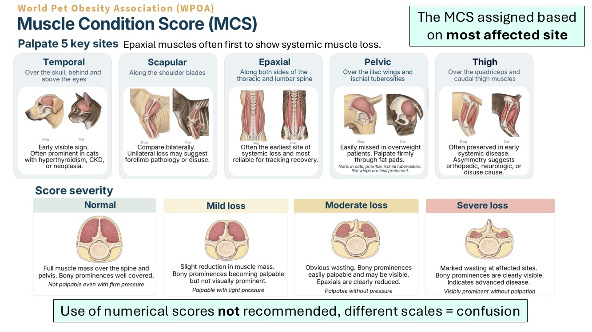
| 部位 | 位置 | 說明 |
|---|---|---|
| 顳肌（Temporal） | 頭骨上方、眼睛後面 | 早期就看得到；貓的甲狀腺亢進、CKD 或腫瘤常先出現在這裡 |
| 肩胛（Scapular） | 沿著肩胛骨 | 兩側比較；單側流失可能是前肢病變或廢用 |
| 軸上肌（Epaxial） | 胸椎與腰椎兩側 | 通常是全身性肌肉流失最早出現的部位，追蹤恢復最可靠 |
| 骨盆（Pelvic） | 髂骨翼與坐骨結節上方 | 過重病患容易漏掉，要穿過脂肪用力觸診（貓的坐骨結節較明顯） |
| 大腿（Thigh） | 股四頭肌與大腿後側肌群 | 早期全身性疾病時常被保留；不對稱提示骨科、神經或廢用原因 |
| 正常 | 輕度流失 | 中度流失 | 重度流失 |
|---|---|---|---|
| 脊椎與骨盆上肌肉飽滿，骨突被完整覆蓋；用力壓也摸不到 | 肌肉量稍減，骨突開始摸得到但看不明顯；輕壓可摸到 | 明顯消瘦，骨突容易摸到、可能看得到，軸上肌明顯減少；不用壓就摸得到 | 受影響部位明顯消瘦，骨突清楚可見，表示疾病進展；不用觸診就看得到 |
不建議用數字評分：不同量表會造成混淆。MCS 依最嚴重的部位給分。
- 🎤 MCS 的資訊很多，也有很多不同的量表，這正是問題所在。
- 🎤 建議評估的部位裡，分數通常依最受影響的部位決定。軸上肌【更正】（逐字稿為 addaxial）最常受影響，所以分數通常以軸上肌為準。
- 🎤 現在的趨勢是不再用數字評分。你可能看過 MCS 滿分 3 或滿分 4 的版本，現在偏好用「正常」到「重度流失」的文字描述，避免不同量表之間的混淆。
3. 病理生理與飼主因素
▾🎤 肥胖的病理生理：不只是吃太多！
- 複雜的交互作用：
- 遺傳、表觀遺傳
- 全身代謝：年齡、性別、是否絕育
- 內分泌功能
- 生活方式：飲食種類、每日熱量攝取、活動量
- 一天餵一次 = 肥胖風險增加
- 🎤 肥胖的病理生理很複雜，很多人醫的新資訊正被應用到獸醫。重點是不是只有吃太多才會肥胖：還有遺傳、環境暴露造成的表觀遺傳、全身代謝（特別是年齡、性別、是否絕育），以及內分泌功能（之後會談甲狀腺功能低下等疾病）。
- 🎤 大家最常想到的是生活方式：吃什麼飲食、是好的飲食還是超加工的市售食物、一天吃多少，以及活動量。講者的狗很活潑、愛跑愛跳，貓則整天坐在沙發上，當然會影響肥胖程度。
- 🎤 獸醫研究顯示餵食頻率也有影響：一天只餵一次的動物，變成過重或肥胖的風險較高。
🎤 飼主對寵物肥胖的影響
- 過重的人比較可能養過重的寵物
- 不了解食物的熱量和寵物的每日需求
- 誤解健康體重應該長什麼樣子：
- 低估寵物的 BCS：飼主 4.6 ± 1.0，獸醫 5.2 ± 1.1
- 約 30% 認為 BCS > 6 是正常
- 約 10% 認為 BCS 8–9 是正常
- 把肥胖當成可愛：「我愛我的胖貓」「牠的肥肉好可愛」
- 過度餵食，「食物 = 愛」
- 🎤 我們的病患多半依附在飼主身上，飼主對動物的 BCS 影響非常大。
- 🎤 過重的人比較可能有過重的寵物。在這群人裡，約 70% 承認自己的生活方式影響了在家照顧寵物的方式，也承認自己造成寵物過重或肥胖。
- 🎤 大部分飼主不了解食物熱量的影響，尤其是零食和剩菜：對自己來說不算什麼，對寵物卻可能是很大的負擔。飼主也很少想到每日熱量需求，所以我們在健康檢查時提供這些資訊非常重要。
- 🎤 很多研究比較飼主和獸醫的 BCS 評分，飼主一如預期會低估。講者覺得最有趣的是：10% 的人認為 BCS 8–9 是正常體態。這些狗可能已經是病態肥胖，飼主卻不覺得家裡的做法有問題。
- 🎤 和人不同，獸醫領域的肥胖常被當成可愛：胖貓很可愛、胖狗很討喜，散步時大家都會注意牠。
- 🎤 很多飼主把食物和愛連在一起，用零食和寵物培養感情、表達愛。這會驅動過食，讓脂肪持續堆積。
4. 肥胖的後果
▾🎤 Consequences of Obesity
肥胖相關疾病風險增加
- 持續性代謝性發炎
- 心血管疾病、高血壓、中風
- 發炎性與自體免疫疾病
- 內分泌功能異常、糖尿病（貓）
- 某些癌症
- 關節疾病、肌肉與骨質流失
- 不孕、睡眠呼吸中止、胃食道逆流、纖維化
生活品質與壽命下降
- 過重 = 壽命比健康體重短
- 🎤 肥胖的後果在人已經很清楚，我們也開始證明在伴侶動物同樣如此。
- 🎤 代謝性發炎：脂肪增加會造成一種低度的全身性發炎，由過多的營養負荷或脂肪觸發，而不是細菌感染或其他疾病。就像任何原因造成的慢性發炎，長期下來會引發一連串健康問題。
- 🎤 心血管疾病在人是大問題，在我們的病患身上也看得到。高血壓在獸醫相對常見，可能和肥胖有關；動脈粥狀硬化和中風也可能發生。過重到肥胖的個體，發炎性與自體免疫疾病的發生率比偏瘦的個體高。
- 🎤 內分泌功能異常很常見：肥胖是成年貓【更正】（逐字稿為 adolescent）發生糖尿病最大的風險因子。
- 🎤 在人，過重或肥胖有一些已確立的癌症傾向，例如甲狀腺癌。
- 🎤 我們常看到關節疾病，原因是負重較大，加上肥胖相關的肌肉流失讓關節失去支撐，也包括骨質。
- 🎤 在人還會造成不孕、睡眠呼吸中止。後者在獸醫也常遇到，特別是胖的短吻犬，例如法鬥。也會促成胃食道逆流和纖維化：肥胖和肝纖維化、肺纖維化的發生率增加有關，而除了脂肪增加之外沒有其他原因。
- 🎤 獸醫研究顯示，過重到肥胖的動物，壽命和生活品質都下降。光這一點就應該成為我們追求減重和理想 BCS 的主要動力，盡量延長牠們和家人相處的時間。
5. 體重偏見：肥胖是疾病
▾🎤 對人的體重偏見
- 社會把肥胖視為負面的事，傾向怪罪個人，也就是「肥胖污名」：
- 「他們自己選擇懶惰、吃太多、不運動」
- 「胖是自己的選擇，應該做更好的決定」
- 「他們顯然缺乏自制力」
- 「放下叉子就好了」
- 媒體把肥胖描繪成：笑點、反派、不吸引人或噁心。
- 偏見對就業、教育、醫療、人際關係都有負面影響。（Ata et al. Obes Facts 2010）
- 🎤 有趣的是，人對肥胖的看法非常負面，尤其是媒體對肥胖或過重者的描繪。我們常怪罪個人，說是他們自己的錯，這叫肥胖污名：他們選擇吃太多、選擇不運動、做了不好的決定，只要放下叉子就會好。
- 🎤 這在大多數情況下都不是事實。遺憾的是，這常讓過重或肥胖的人在工作、教育、醫療和人際關係上受到負面影響。
- 🎤 媒體把肥胖的人塑造成電視或電影的笑點、反派，或不吸引人、噁心的角色，加深了這些偏見。
- 🎤 很有趣的對比：我們認為人胖是壞事，卻覺得動物胖很可愛。我們必須讓飼主不再把肥胖看成可愛或好笑。
🎤 肥胖是一種疾病！
- 是一種複雜的慢性疾病：
- 由遺傳、環境、生物學與大腦化學驅動
- 不是行為失敗或缺乏自制力
- 肥胖驅動過食，過食再加重肥胖，而不是反過來（「肥胖的循環」）。
- 舉例：關節炎造成疼痛，治療關節炎就能減輕疼痛。
- 肥胖造成體重過重，體重就是肥胖的「疼痛」
- 正確治療肥胖 = 體重下降、健康獲益
- 需要多面向的處理，不只是單純限制熱量。
- 🎤 我們要讓大家了解，肥胖就像其他疾病一樣，是必須管理的慢性病，不是生活方式或行為上的失敗。它由遺傳、環境、生物學和大腦化學驅動。
- 🎤 「肥胖驅動過食，不是反過來。過食不會驅動肥胖。」
- 🎤 把肥胖想成關節炎：關節炎造成疼痛，治療關節炎就能減少疼痛。體重就是肥胖的疼痛：肥胖造成體重增加，治療肥胖就能降低體重，並從減重中得到健康的好處。
- 🎤 這是多面向的做法，不只是限制熱量或換飼料。人和犬貓的適當減重都牽涉很多因素。
6. 大腦的生物學：多巴胺與菸鹼受體
▾🎤 肥胖的生物學與化學（功能性 MRI 與 PET 研究）
- 食物活化獎賞中樞：吃東西 → 大量釋放多巴胺 → 感到愉悅、滿足
- 好的感覺在吃完後還會持續很久
- 同時，自制力相關區域的神經活性下降
- 對甜食或高脂食物的反應，和對成癮藥物的反應相同
- 隨時間推移，獎賞中樞對食物的反應變鈍：
- 多巴胺（D2）受體表現下調，原因是過食造成長期多巴胺偏高
- 遺傳傾向（TaqIA A1 對偶基因）？
- 必須吃更多才能感到同樣的飽足與滿足
- 🎤 講者覺得這部分很迷人。很多資料來自人的功能性 MRI 和 PET 研究：給予食物線索、視覺刺激或實際進食，再用這些動態斷層影像評估反應。
- 🎤 食物會活化大腦的獎賞中樞（講者說通常在下視丘一帶）。吃東西時，中樞獎賞系統釋放多巴胺，讓我們感受到「天啊，這頓午餐好好吃，真開心」的喜悅與滿足。這種好感覺在吃完、不再進食之後還會持續很久。
- 🎤 同時，大腦的自制力區域活性下降。刺激獎賞中樞的同時也在抑制自制力，一旦失衡，就會讓人一直想吃。
- 🎤 對人來說，甜食和高脂食物是食物成癮的主要驅動者。過重或肥胖的人，對甜食和高脂食物的中樞神經反應，和人對成癮藥物的反應相似。
- 🎤 長期過食造成慢性多巴胺釋放，隨著體重與脂肪增加，獎賞中樞的活化會變鈍，原因是中樞神經組織的多巴胺受體下調。結果必須吃更多，才能感受到和兩個月前（體重較理想、多巴胺反應較正常時）一樣的滿足。
- 🎤 人有這方面的遺傳傾向：某個基因突變讓人無法從進食得到同樣的滿足，所以一直吃、一直吃，卻始終不覺得滿足、吃飽。
🎤 多巴胺 D2 受體表現（Wang et al. Lancet 2001）
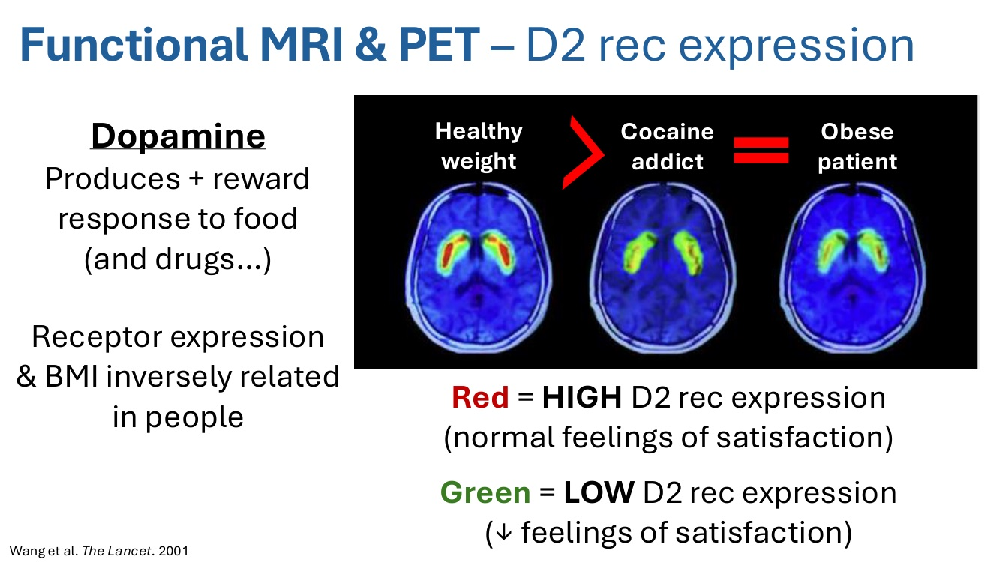
- 多巴胺對食物（以及藥物）產生正向獎賞反應。
- 在人，D2 受體表現與 BMI 呈負相關。
- 🎤 這是功能性 MRI／PET 影像，比較健康體重者、古柯鹼成癮者和肥胖病患腦中的多巴胺受體表現。健康體重者的受體表現遠高於古柯鹼成癮者，而古柯鹼成癮者和肥胖病患的表現量完全一樣。
- 🎤 所以這真的變成一種食物成癮：對進食的反應，和古柯鹼成癮者對成癮藥物的反應一樣。受體表現與 BMI 呈負相關，也支持「肥胖驅動食物成癮」。
🎤 對食物線索的神經活性：健康體重 vs 肥胖
- α4β2 菸鹼型乙醯膽鹼受體
- 肥胖造成受體去敏感化
- 損害正常的獎賞反應
- 對含糖和高脂食物的渴望增加
- 🎤 另一個研究看視覺食物線索引起的神經活化。講者標出幾個重要的框：基線時（沒有線索），健康體重和肥胖者在下視丘區域的菸鹼受體表現沒有差異。
- 🎤 菸鹼受體，顧名思義，也是香菸成癮的驅動者：香菸成癮來自活化這些受體。這些受體也會回應食物線索與進食，驅動食物成癮。
- 🎤 給予食物線索時，肥胖者的反應增加（逐字稿說成「受體表現增加」）。原因是隨著進食增加，這些受體長期受刺激，敏感度下降、受體表現下調，於是必須吃得越來越多，才能得到同樣的喜悅或滿足。所以不只是多巴胺受體，菸鹼受體【更正】（逐字稿為 mechanoreceptors）也參與食物成癮的過程。
7. 脂肪組織與脂肪激素
▾肥胖、脂肪組織與脂肪激素（Rezvani et al. J Physiol 2024）
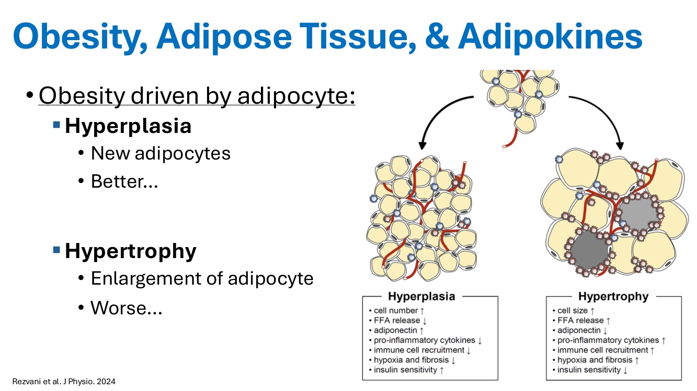
增生（Hyperplasia）：較好
- 產生新的脂肪細胞
- 細胞數 ↑、游離脂肪酸釋放 ↓、adiponectin ↑
- 促發炎細胞激素 ↓、免疫細胞招募 ↓
- 缺氧與纖維化 ↓、胰島素敏感性 ↑
肥大（Hypertrophy）：較差
- 脂肪細胞變大
- 細胞體積 ↑、游離脂肪酸釋放 ↑、adiponectin ↓
- 促發炎細胞激素 ↑、免疫細胞招募 ↑
- 缺氧與纖維化 ↑、胰島素敏感性 ↓
🎤 脂肪組織的功能
- 能量恆定：脂質與葡萄糖
- 保護：緩衝與保暖
- 內分泌訊號：脂肪激素（adipokines）
- 🎤 脂肪組織是能量儲備，幫助維持能量恆定，對脂質與葡萄糖代謝特別重要。它也提供保護、緩衝和保暖，但希望是剛好的量，不要跨到過重或肥胖。
- 🎤 脂肪大概是體內最有內在活性的器官之一，會釋放大量活性訊號，也就是脂肪激素。
- 🎤 脂肪激素很重要，因為它們負責部分訊號傳遞，尤其是傳到中樞神經系統，依據食物與能量儲備來驅動或抑制食慾。
🎤 脂肪激素
| 瘦＋代謝功能正常 | 肥胖＋輕度代謝異常 | 肥胖＋完全代謝異常 |
|---|---|---|
| 發炎 ↔、代謝控制 ↔、血管功能 ↔ M2 巨噬細胞、CD4⁺ T 細胞 | 發炎 ↑、代謝控制 ↓、血管功能 ↔ CD8⁺ T 細胞、M1 巨噬細胞 | 發炎 ↑↑、代謝控制 ↓↓、血管功能 ↓ 壞死脂肪細胞、冠狀結構（crown-like structure） |
抗發炎脂肪激素
- Adiponectin、Apelin
- FGF-21、SFRP5
促發炎脂肪激素
- Leptin、Resistin、TNF
- NAMPT、IL-6、IL-18
- Lipocalin-2、RBP4、CXCL5
- 🎤 瘦的個體代謝功能相對正常。開始增加多餘體重時，會出現代謝功能異常；隨著脂肪越來越多，代謝異常也越來越嚴重。
- 🎤 脂肪激素有好有壞，講者依促發炎或抗發炎來分組。時間不夠全部談，所以聚焦在最常被討論的兩個：adiponectin 和 leptin。
🎤 好的 Adiponectin vs 過量就變壞的 Leptin（Tilg et al. Nat Rev Immunol 2025）
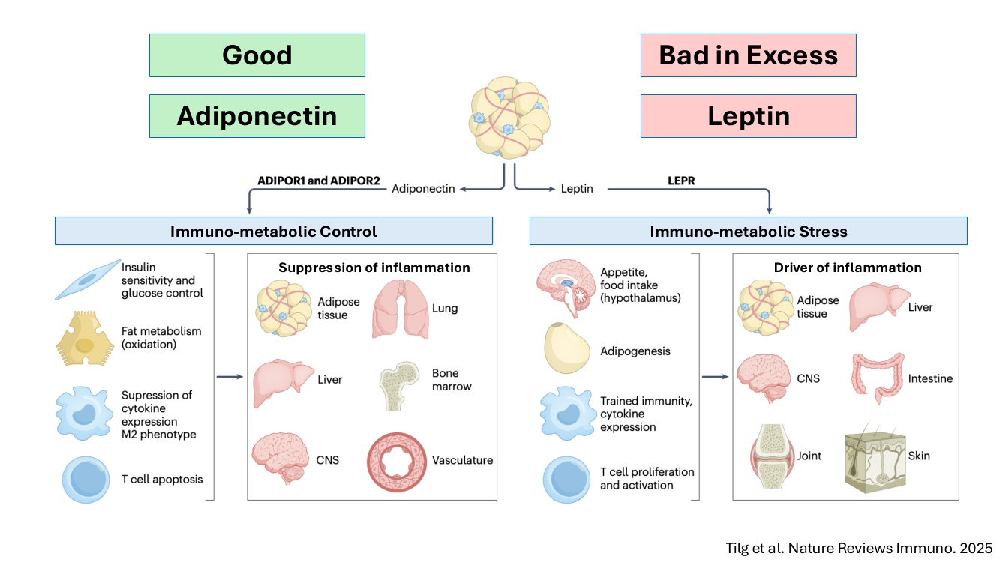
Adiponectin：免疫代謝控制
- 胰島素敏感性與血糖控制
- 脂肪代謝（氧化）
- 抑制細胞激素表現、M2 表型
- T 細胞凋亡
- 抑制發炎：脂肪、肺、肝、骨髓、中樞神經、血管
Leptin：免疫代謝壓力
- 食慾、進食（下視丘）
- 脂肪生成
- 訓練性免疫、細胞激素表現
- T 細胞增生與活化
- 驅動發炎：脂肪、肝、中樞神經、腸、關節、皮膚
- 🎤 這是很粗略的概括：adiponectin 一般被視為好的脂肪激素；leptin 本身不壞，但過量時會變成很壞的脂肪激素，明顯促進周邊與全身性發炎。
🎤 Adiponectin
- 脂肪組織 ↑ = adiponectin ↓
- 公貓的基礎濃度較低 = 糖尿病風險增加？？？
- 作用：
- 關鍵的抗發炎脂肪激素：對大多數器官系統都很重要；影響先天與後天免疫；抑制 TNF、NF-κB 和巨噬細胞功能
- 增加胰島素分泌與敏感性
- 促進脂肪酸氧化，而且不會造成脂毒性
- 抗細胞凋亡、抗纖維化
- 🎤 Adiponectin【更正】（逐字稿為 adrenocortin、abstinence）和脂肪程度成反比：脂肪組織越多，adiponectin 越低。
- 🎤 主要作用是抗發炎，是許多器官中非常重要的發炎控制介質，對全身器官系統都很重要。它影響先天與後天免疫反應，抑制體內主要的發炎標記與訊號。
- 🎤 它會增加胰島素分泌和胰島素敏感性，也促進脂肪酸氧化。有趣的是，它不會讓身體出現脂毒性的負面影響。
- 🎤 它還有抗發炎和抗血栓的作用（講義寫抗細胞凋亡、抗纖維化），在低度全身性發炎時很有幫助。
補充：講義的「公貓基礎 adiponectin 較低」可對照公貓本來就是糖尿病的高風險族群；講者用三個問號表示這個連結還沒有定論。
8. Leptin 與 leptin 阻抗
▾🎤 Leptin
- 脂肪組織 ↑ = leptin ↑
- 作用：
- 促發炎：代謝性發炎的主要驅動者，增加細胞激素分泌（TNF、IL-1β、IL-6）
- 和 ghrelin 協同調節食慾：leptin 高 = 覺得飽；leptin 低 = 覺得餓
- 調節能量消耗、代謝率
- 影響胰島素敏感性與糖質新生
- 促進脂質氧化
- 🎤 Leptin 和脂肪組織量成正比：脂肪越多，leptin 越高。暴露在越多 leptin 下，越會看到它的壞作用。
- 🎤 Leptin 是促發炎的，是代謝性發炎（低度全身性發炎）的主要驅動者，透過促使多種發炎細胞激素分泌來達成。
- 🎤 它和 ghrelin 共同調控對進食的正常反應。講者把 leptin 想成飽足荷爾蒙，ghrelin 是飢餓荷爾蒙：
- 吃東西時，leptin 應該上升讓你覺得飽；兩餐之間（禁食）時應該下降讓你覺得餓。
- Ghrelin 相反：餓的時候上升驅動飢餓，吃東西時下降。
- 🎤 它也調節能量消耗和代謝率，影響胰島素敏感性和糖質新生，並促進脂質氧化，提供可用能量。
🎤 健康狀態下的 Leptin
- 幫助平衡進食與能量使用，目標是維持體重。
進食 = Leptin 高
- 中樞神經認為能量儲備足夠
- 促進飽足感與能量使用
禁食 = Leptin 低
- 中樞神經認為能量不足
- 促進飢餓、保留能量
- 🎤 健康時，leptin 幫助平衡進食與能量使用。瘦的個體靠 leptin 維持瘦的體重，所以 leptin 不是壞人，只有過量分泌時才變壞。
- 🎤 進食狀態 leptin 高，告訴中樞神經「我有很多能量可用，不用繼續吃」，應該停止進食、覺得飽，可以開始使用能量，例如去跑步或逃離獅子。
- 🎤 禁食狀態 leptin 低，告訴中樞神經能量不足，會刺激食慾，同時告訴身體不要消耗能量，保留儲備，保護身體在能量不足時不要過度消耗。
- 🎤 Leptin 的作用器官主要是下視丘，但身體其他地方也有受體，例如胰臟和腸道。下視丘對食慾調節與能量控制最重要。
🎤 Leptin 阻抗
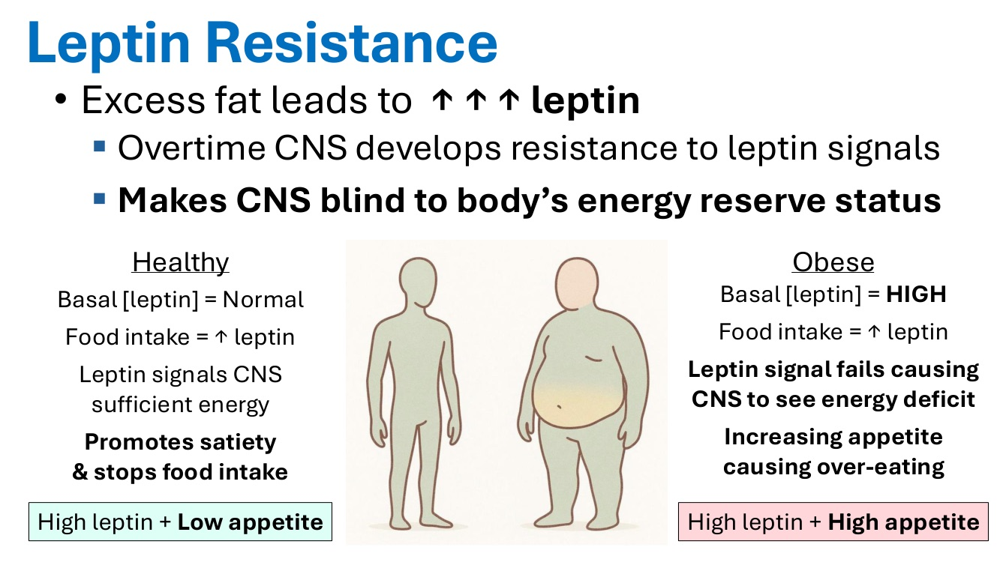
- 脂肪過多 → leptin ↑↑↑
- 中樞神經逐漸對 leptin 訊號產生阻抗
- 讓中樞神經看不見身體的能量儲備狀態
| 健康 | 肥胖 | |
|---|---|---|
| 基礎 leptin | 正常 | 高 |
| 進食後 | leptin ↑ | leptin ↑ |
| 中樞反應 | Leptin 告訴中樞能量足夠 | Leptin 訊號失效，中樞以為能量不足 |
| 結果 | 促進飽足、停止進食 | 食慾增加，造成過食 |
| 高 leptin ＋ 低食慾 | 高 leptin ＋ 高食慾 |
- 🎤 問題就從 leptin 阻抗開始，和前面談的多巴胺是同樣的道理。脂肪過多讓 leptin 濃度增加，久了中樞神經會說：「Leptin，你跟我說太多話了」，開始關掉 leptin 訊號，不再正常回應 leptin 傳達的能量儲備狀態。
- 🎤 中樞神經就這樣看不見身體的能量狀態。健康時基礎 leptin 正常，吃東西讓 leptin 上升，告訴中樞有能量可用、抑制食慾，高 leptin 伴隨低食慾。
- 🎤 肥胖者因為 leptin 阻抗，吃東西時 leptin 非常高，但中樞偵測不到，不會產生飽足感，反而食慾增加。這就是壞的地方：leptin 很高，食慾也很高。我們失去了「吃飽、能量足夠就該停止進食」的正常回饋機制。
9. 肥胖管理總覽
▾🎤 如何正確治療這個慢性疾病？
- 評估造成肥胖的疾病，特別是甲狀腺功能低下！！！
- 有控制的減重：每週減 1–2% 體重
- 飲食治療：限制熱量
- 增加活動量
- 飼主教育、行為訓練與照顧方式
- 建立健康的生活方式、作息與習慣
- 餵食方式與份量、其他食物來源
- 處理「食物 = 愛」的感受
- 減重藥物（例如 GLP-1）
- 減重手術（人）
- 🎤 要考慮的事情很多，其中最重要的大概是篩檢甲狀腺功能低下。講者說，在非常胖的病患身上常看到甲狀腺功能低下，在中度肥胖的病患中甚至超過一半。診斷並治療它當然不能解決所有肥胖問題，但控制好這類潛在疾病，會大幅幫助其他減重努力。
- 🎤 減重要有控制，理想目標是每週減 1–2%，通常靠飲食治療、限制熱量，加上增加活動量來提高能量消耗。
- 🎤 要教育飼主，因為我們要靠飼主配合執行，才能讓病患達到並維持理想體重。不只談寵物的健康習慣，也要讓他們明白，自己生活上的改變也會影響寵物的健康。
- 🎤 要提供營養建議：吃什麼、吃多少，並計算每日熱量需求。
- 🎤 獸醫很怕談肥胖，怕說「你的狗病態肥胖」會惹惱飼主，所以乾脆不談。飼主就得不到反覆的提醒。第一次提到時，飼主通常不會有任何行動；但聽得越多，我們越常教育肥胖的負面影響，他們就越可能認同減重的重要性。
- 🎤 要開始處理「食物 = 愛」，教育飼主寵物一天實際需要多少熱量，以及哪些是好的、安全的食物。
- 🎤 你叫飼主不要給零食，他們還是會給。但我們可以控制他們給什麼：與其給 Milk-Bone 或義大利臘腸條，有沒有其他對脂肪攝取和堆積影響較小的選擇？
- 🎤 其他方法都失敗時，才考慮藥物。藥物不應該取代清單上前三項。講者最擔心的是，現在人醫很流行的減重藥物不應被當成替代方案，而應該是正常減重與控制體重努力的輔助。不應該一開始就用，而是先試一般的減重計畫，效果不足以達到理想體重的個體，才是這些輔助治療最有幫助的對象。
- 🎤 人還有減重手術（胃袖狀切除、胃繞道），但獸醫病患不做。
補充：「中度肥胖病患超過一半有甲狀腺功能低下」是錄音中的說法，講義沒有這個數字。一般文獻中，甲狀腺功能低下只占肥胖犬的一小部分，而且貓極少見；肥胖或非甲狀腺疾病也可能讓 TT4 偏低，診斷時要搭配 fT4、TSH 與臨床表現，避免過度診斷。這句可能是口誤或轉錄問題，引用前請再確認。
10. 營養計畫與飲食治療
▾🎤 營養計畫（Cline et al. 2021 AAHA 營養與減重指引）
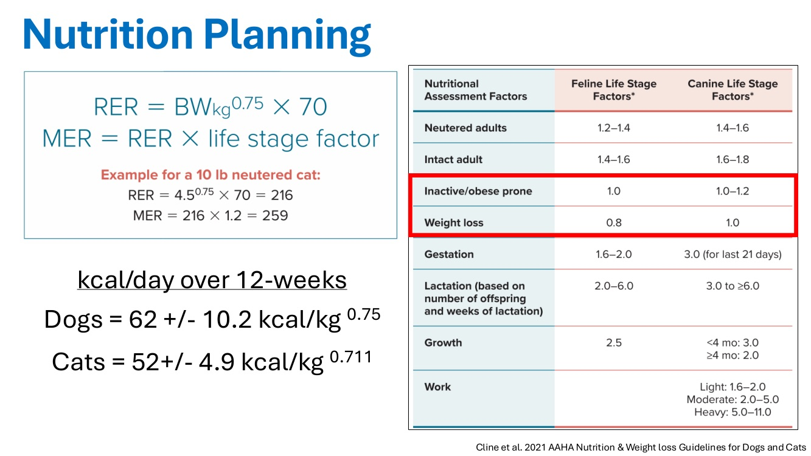
公式
- RER = BW(kg)0.75 × 70
- MER = RER × 生命階段係數
- 例：10 lb 已絕育貓：RER = 4.50.75 × 70 = 216；MER = 216 × 1.2 = 259
12 週減重的每日熱量
- 狗 = 62 ± 10.2 kcal/kg0.75
- 貓 = 52 ± 4.9 kcal/kg0.711
| 狀態 | 貓的係數 | 狗的係數 |
|---|---|---|
| 已絕育成年 | 1.2–1.4 | 1.4–1.6 |
| 未絕育成年 | 1.4–1.6 | 1.6–1.8 |
| 不活動／容易肥胖 | 1.0 | 1.0–1.2 |
| 減重 | 0.8 | 1.0 |
| 懷孕 | 1.6–2.0 | 3.0（最後 21 天） |
| 泌乳（依胎數與泌乳週數） | 2.0–6.0 | 3.0 到 ≥ 6.0 |
| 生長 | 2.5 | < 4 月齡 3.0；≥ 4 月齡 2.0 |
| 工作 | — | 輕度 1.6–2.0；中度 2.0–5.0；重度 5.0–11.0 |
- 🎤 這張營養計畫的表之前看過（06 場），希望大家在門診時都有把這些資訊提供給飼主。
- 🎤 生活方式因子取自 2021 年 AAHA【更正】（逐字稿為 AHA）營養指引，裡面也有 12 週減重計畫的具體建議，以及狗貓的計算公式，據報可達成每週 1–2% 的減重。
- 🎤 用這個計算病患的每日熱量需求，告訴飼主在家照所選的飼料餵多少。
補充：減重時 RER／MER 要用目標體重計算，不是目前體重（見病例 Merlin）。例：目標 7 kg 的狗，12 週減重熱量約 62 × 70.75 ≈ 62 × 4.30 ≈ 267 kcal/天。
飲食治療：罐頭優先
為什麼罐頭較好
- 水分較多
- 熱量密度較低 → 支持減重
- 提高飼主滿意度：可以給更多食物來滿足每日熱量需求
例：5 kg 貓（理想 BCS），每日需求約 280 kcal
- Royal Canin GlycoAdvanced 乾糧：3,180 kcal/kg、299 kcal/杯 → 每天 0.93 杯
- GlycoAdvanced 罐頭：638 kcal/kg、93 kcal/罐 → 每天 3 罐
🎤 增加哪種飲食成分有助減重？
- p.28 提問：熱量？碳水？蛋白質？脂肪？纖維？
- 理想飲食：低脂＋低熱量＋高蛋白＋高纖
- 高蛋白：支持肌肉 ↑、脂肪 ↓
- 限制熱量時保留肌肉
- 貓：把脂肪從肝臟動員出來（肝脂質沉積）
- 高蛋白＋高纖 = 飽足感 ↑
- 一定要考慮共病：
- 先針對最先會要命的病！！！
- 需要營養專科協助嗎？
- 用秤量份量以避免過度餵食，而不是用杯子或量匙。
- 🎤 飲食治療在營養那一場講過。理想飲食是低脂、低熱量，記得高蛋白有益，高纖也是。高蛋白加高纖能增加飽足感。
- 🎤 因為是主動要減重，高蛋白特別重要：我們不希望減重是以犧牲肌肉為代價。高蛋白能保留肌肉，讓減掉的集中在脂肪。
- 🎤 蛋白質給太少，會同時減掉脂肪和肌肉，長期對病患不利，也可能影響減重目標，因為保留下來的肌肉有助於達標後維持理想體重。
- 🎤 高蛋白也有助於把脂肪從肝臟動員出來。特別是在限制熱量的貓，高蛋白飲食可能預防或治療減重期間的任何程度的脂肪肝。
- 🎤 有共病時要納入考量，先處理最先會要命的病，若過重再想辦法減重。最大的顧慮是腎病：很多腎臟處方熱量偏高，對很晚期的病患要減重時可能會有問題。
- 🎤 已證實真的能幫動物減重的一件事：請飼主精確餵食，買一個克秤實際秤食物。研究顯示，靠杯子或量匙的飼主普遍會餵太多。盡可能算出這個熱量對應多少克食物，有助於維持減重計畫。
📷 現場🎤 Mark Morris Institute 營養指南
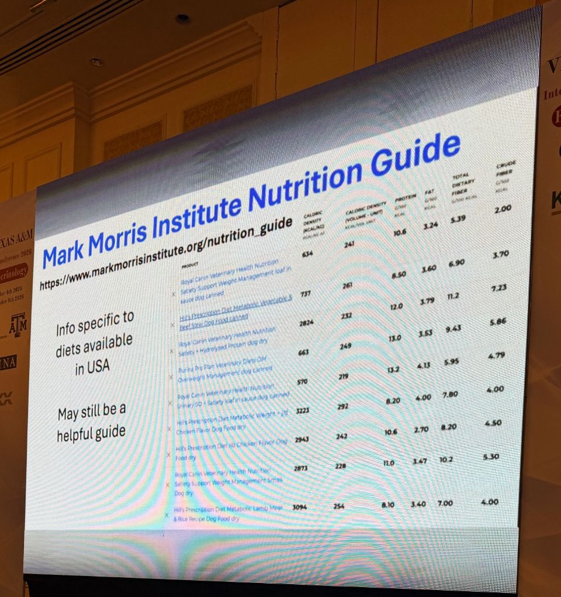
- 資料只涵蓋美國市售的飼料，但仍然可以當作有用的參考。
| 產品 | 熱量密度 (kcal/kg) | 每單位熱量 (kcal/罐或杯) | 蛋白質 | 脂肪 | 總膳食纖維 | 粗纖維 |
|---|---|---|---|---|---|---|
| Royal Canin Satiety Support Weight Management（犬罐頭，loaf in sauce） | 634 | 241 | 10.6 | 3.24 | 5.39 | 2.00 |
| Hill's Prescription Diet Metabolic 蔬菜燉牛肉（犬罐頭） | 737 | 261 | 8.50 | 3.60 | 6.90 | 3.70 |
| Royal Canin Satiety + Hydrolyzed Protein（犬乾糧） | 2824 | 232 | 12.0 | 3.79 | 11.2 | 7.23 |
| Purina Pro Plan Veterinary Diets OM Overweight Management（犬罐頭） | 663 | 249 | 13.0 | 3.53 | 9.43 | 5.86 |
| Royal Canin Urinary SO + Satiety（犬罐頭，loaf in sauce） | 570 | 219 | 13.2 | 4.13 | 5.95 | 4.79 |
| Hill's Prescription Diet Metabolic Weight + j/d 雞肉口味（犬乾糧） | 3223 | 292 | 8.20 | 4.00 | 7.80 | 4.00 |
| Hill's Prescription Diet r/d 雞肉口味（犬乾糧） | 2943 | 242 | 10.6 | 2.70 | 8.20 | 4.50 |
| Royal Canin Satiety Support Weight Management 小型犬（乾糧） | 2873 | 228 | 11.0 | 3.47 | 10.2 | 5.30 |
| Hill's Prescription Diet Metabolic 羊肉與米（犬乾糧） | 3094 | 254 | 8.10 | 3.40 | 7.00 | 4.00 |
營養素單位為 g/100 kcal（品名已依講義 PDF 確認）。
- 🎤 Mark Morris Institute【更正】（逐字稿為 Martin Morris）有線上營養指南。好處是可以輸入狗或貓、年齡、要處理的疾病，它就會列出飲食選項（大部分是處方飼料）和完整營養成分：脂肪、碳水、每杯或每罐的熱量。
- 🎤 很多時候 g/100 kcal 這類數據在飼料標示上不容易找到，甚至找不到，這裡很容易就能拿到，是很好的資源。
- 🎤 當然只限美國市售飼料，要打點折扣。但即使你們沒有美國這些飼料，知道什麼營養組成適合這些病患，也能幫你在自己國家找到相對應的飼料。
補充：怎麼看這張表
- 用 g/100 kcal 比較，才不會被含水量和熱量密度干擾，罐頭和乾糧可以直接比。
- 纖維最高的是 RC Satiety 系列（總纖維 10–11 g/100 kcal）；蛋白質最高的是 Purina OM 和 RC Urinary SO + Satiety。
- 「總膳食纖維」包含可溶性纖維，比標示上的「粗纖維」更能反映實際纖維量，兩者可差 2–3 倍（例如 RC Satiety + HP 11.2 vs 7.23）。
- 每杯熱量決定實際份量：同樣熱量目標，每杯 219 和 292 kcal 的飼料份量差約三分之一。
- 對照 06 犬的飲食成分與纖維：瘦弱或有胰臟炎的糖尿病犬，不適合直接用這類高纖減重處方。
11. 飼主因素
▾🎤 The Client Factor
- 努力讓寵物減重的飼主……常常自己也瘦了！比起為自己，更可能為了寵物去運動。
- 教育減重的重要性：降低疾病風險、延長壽命、改善生活品質。
- 給清楚的建議，堅定但有彈性：太過僵化會降低配合度，還可能讓飼主不誠實。
- 增加活動：散步、丟接球、追雷射光等。
- 點心、零食等必須 < 每日總熱量的 10%。
- 定期追蹤、檢查進度來支持飼主。
- 🎤 有趣的是，努力讓寵物減重的飼主，最後自己也瘦了。醫師要病人減重，病人比較不會做到；獸醫要飼主讓寵物減重，飼主比較會做到，最後連自己也受益，效果比單純為自己健康努力更好。
- 🎤 要教育飼主減重的重要性，最有用的大概是過重會縮短壽命。這讓飼主了解減重有多重要：減重就能和寵物有更多時間。
- 🎤 給非常明確具體的建議很有幫助：「吃這款飼料、這個份量、一天幾次」。太模糊會給飼主太多自行其是的空間，結果就是餵太多。
- 🎤 要堅定但有彈性。研究顯示，建議太僵化會降低飼主配合度。你說不准給零食，他們還是會給，只是不會告訴你。你不知道，就很難長期有效管理這個病患。
- 🎤 和飼主合作，了解他們在做什麼，再調整成符合建議的做法。太嚴格會扼殺配合度，也會扼殺你和飼主之間的誠實溝通。
- 🎤 增加活動也很重要。低強度運動像散步通常最有幫助，因為對飼主來說不會太累。活潑或年輕的狗可以玩丟接球。貓比較難，但可以用會動的玩具或雷射筆讓貓追，至少讓貓離開沙發 10–15 分鐘，增加活動量支持減重。
- 🎤 點心和零食可以給，只要算進每日熱量需求，理想上不超過每日總熱量的 10%。想給義大利臘腸條也可以，但要從飼料份量扣掉，一天的飼料就變少。選健康一點的零食，就能維持正常的飼料量，飼主通常比較喜歡這樣。
- 🎤 要讓飼主有人督促。研究顯示有效的方式是定期追蹤，例如請護理人員在減重開始兩週時打電話關心，確認在家是否順利、遇到什麼困難，幫助飼主維持目標，也讓他們覺得有我們支持。
12. GlycoAdvanced 試驗與病例 Merlin
▾🎤 GlycoAdvanced 臨床試驗（Jørgensen 2026）
- 評估限制熱量的影響；N = 72 隻過重的糖尿病貓。
- 兩組都吃 GlycoAdvanced（GA），目標分別是：
- 維持體重 = 80 kcal/BW0.75
- 減重 = 40 kcal/BW0.75
- 限制熱量組：緩解機率較高（4 倍）、胰島素劑量降低、血糖變異度下降幅度較大。
- 兩組都改善：生活品質、糖尿病臨床評分。
- 🎤 上一場營養課提過，貓限制熱量是幫助減重的有效方法，在糖尿病貓也能改善多項和血糖控制有關的因子。
- 🎤 但研究中兩組即使沒有限制熱量，生活品質和糖尿病臨床評分【更正】（逐字稿為 model diet score）都有改善。
- 💡 詳見 06 第 12 節 GlycoAdvanced 熱量限制試驗。
🎤 病例 Merlin：6 歲已去勢公布偶貓（講者的貓）
年度健康檢查
- 10 kg（22 lb），BCS 9/9 = 胖
- 血檢：無明顯異常，緊迫性高血糖
- 果糖胺 = 349 µmol/L（參考值 200–365）
餵食計畫：目標體重 7 kg
- RER = 70.75 × 70 = 301 kcal/天
- MER = 301 × 0.8 = 241 kcal/天
- 每天總共約 241–250 kcal
- 🎤 這是講者自己的貓 Merlin，6 歲布偶貓【更正】（逐字稿為 blonde-haired cat）。年度健檢時 10 公斤（22 磅），非常胖，BCS 9/9。放這張照片就是要讓大家看看他有多胖。
- 🎤 血檢無明顯異常，推測有緊迫反應（逐字稿說 stress leukogram，講義寫 stress hyperglycemia）。做了果糖胺，結果在正常高值，所以這隻貓很可能處於糖尿病前期。
- 🎤 餵食計畫以 7 公斤理想體重為目標計算 MER，約每天 240–250 kcal。
補充：注意 RER 是用目標體重 7 kg算，不是目前的 10 kg（100.75 × 70 ≈ 394 kcal）。減重係數 0.8 來自 p.26 的貓「減重」欄。從 10 kg 減到 7 kg 要減 30%，以每週 1–2% 的速度，大約需要 4–7 個月以上。
🎤 Merlin 的飲食選擇
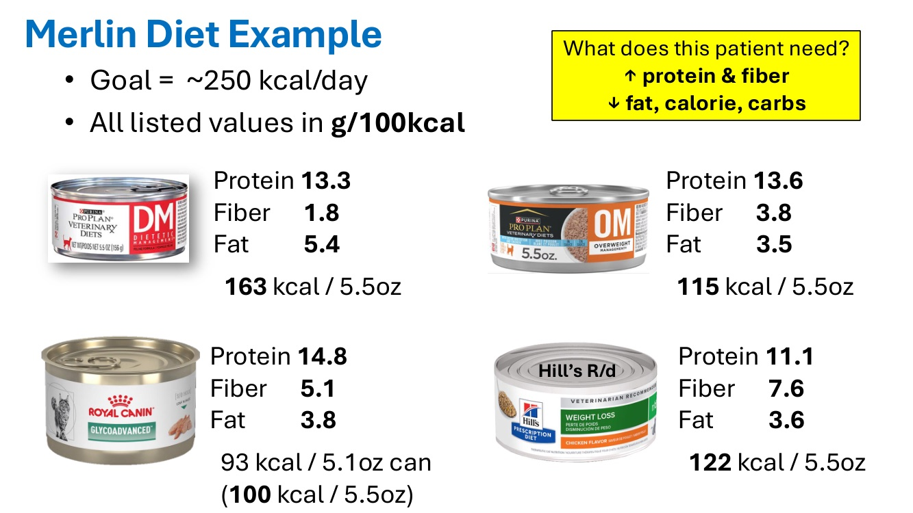
| 罐頭 | 蛋白質 | 纖維 | 脂肪 | 熱量 |
|---|---|---|---|---|
| Purina Pro Plan DM | 13.3 | 1.8 | 5.4 | 163 kcal / 5.5 oz |
| Purina Pro Plan OM Overweight | 13.6 | 3.8 | 3.5 | 115 kcal / 5.5 oz |
| Royal Canin GlycoAdvanced | 14.8 | 5.1 | 3.8 | 93 kcal / 5.1 oz 罐（100 kcal / 5.5 oz） |
| Hill's r/d | 11.1 | 7.6 | 3.6 | 122 kcal / 5.5 oz |
這隻貓需要什麼？蛋白質和纖維 ↑；脂肪、熱量、碳水 ↓
- 🎤 目標 250 kcal。這隻貓理想上需要高蛋白、高纖（纖維在貓可能不像在狗那麼重要），以及低脂、低熱量、低碳水【更正】（逐字稿為 low tart）。
- 🎤 這裡有幾款糖尿病飼料和幾款減重飼料，最下面是 Hill's r/d。
- 🎤 蛋白質方面，每一款都相對高。纖維濃度差異很大。脂肪除了 DM 之外（逐字稿此處不清楚），大致在 3.5–3.8 之間。
- 🎤 熱量方面，以 5–5.5 oz 罐頭來說，DM 最高，GlycoAdvanced 最低。所以這個情況下，GlycoAdvanced 或 OM 可能是理想選擇；為了減重，GlycoAdvanced 大概最適合，即使這隻貓還不是糖尿病貓。很多處方糖尿病飼料其實也很適合減重。
補充：換算成份量：250 kcal ÷ 93 kcal/罐 ≈ 每天 2.7 罐 GlycoAdvanced；換成 DM 只能吃 250 ÷ 163 ≈ 1.5 罐，份量少很多，飼主也比較難接受。
13. 減重藥物的生理基礎：腸泌素、GLP-1、amylin、升糖素
▾🎤 如果飲食、運動、減少熱量都不夠呢？
- 🎤 這時候藥物可能在獸醫開始扮演角色，人醫也越來越流行。
- 🎤 在人也一樣：過重的人如果沒有任何其他介入就直接用這些藥，減掉的肌肉可能和脂肪一樣多，日後造成很多其他問題。
- 🎤 所以飲食治療、計算熱量、增加活動量仍然很重要。在人，增加活動量特別能預防 GLP-1 促效劑相關的肌肉流失。
🎤 肥胖治療藥物的作用目標（Obesity Reviews 2021）
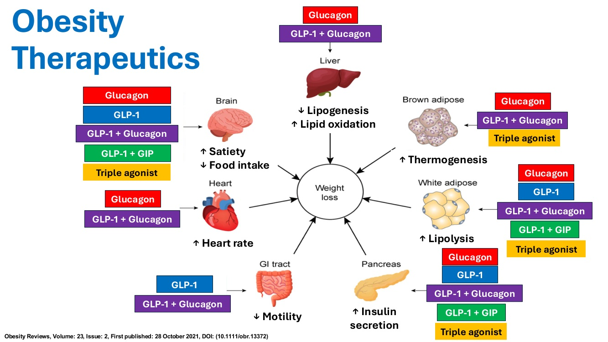
| 器官 | 作用 | 相關藥物成分 |
|---|---|---|
| 腦 | 飽足感 ↑、進食 ↓ | 升糖素、GLP-1、GLP-1＋升糖素、GLP-1＋GIP、三重促效劑 |
| 心臟 | 心跳 ↑ | 升糖素、GLP-1＋升糖素 |
| 肝臟 | 脂肪生成 ↓、脂質氧化 ↑ | 升糖素、GLP-1＋升糖素 |
| 棕色脂肪 | 產熱 ↑ | 升糖素、GLP-1＋升糖素、三重促效劑 |
| 白色脂肪 | 脂肪分解 ↑ | 升糖素、GLP-1、GLP-1＋升糖素、GLP-1＋GIP、三重促效劑 |
| 胰臟 | 胰島素分泌 ↑ | 升糖素、GLP-1、GLP-1＋升糖素、GLP-1＋GIP、三重促效劑 |
| 腸胃道 | 蠕動 ↓ | GLP-1、GLP-1＋升糖素 |
- 🎤 這張示意圖顯示人醫各種肥胖藥物的成分與作用目標，接下來會舉一些獸醫研究和多成分藥物的例子。
🎤 腸泌素效應（Incretin effect）
- 口服葡萄糖後的胰島素釋放，比靜脈給葡萄糖高，即使達到的血糖濃度相似。
- 腸泌素：
- GLP-1（類升糖素胜肽-1）：飽足感 ↑、產熱 ↑；食慾 ↓、延緩胃排空、升糖素分泌 ↓
- GIP（葡萄糖依賴性促胰島素多肽）：GLP-1 與升糖素分泌 ↑
- 貓的葡萄糖誘發腸泌素效應比其他物種弱。
- 🎤 GLP-1 是過去幾年的焦點。腸泌素效應就是對葡萄糖負荷釋放多少胰島素：口服葡萄糖時，胰島素分泌會比靜脈給葡萄糖高很多。靜脈給就得不到同樣的胰島素反應，原因就是腸泌素效應。
- 🎤 貓和人不太一樣，腸泌素效應大致相反、比較弱：貓的胰島素反應 70% 來自葡萄糖本身，只有 30% 來自腸泌素效應。
- 🎤 GLP-1 增加飽足感和產熱（消耗能量，有助減重），透過延緩胃排空抑制食慾，也被證實能降低升糖素。
- 🎤 GIP 也被證實能增加 GLP-1 濃度和升糖素分泌。（逐字稿另說「在人的效果比貓持久 5 倍」，意思不明確。）
🎤 GLP-1（Model et al. Vet Anim Sci 2022）
- 由空腸的 L 細胞分泌；人則在遠端迴腸與結腸。
- 主要分泌刺激：
- 狗 = 高脂飲食；貓 = 高蛋白飲食
- 一天餵一次的貓，GLP-1 濃度比一天餵 4 次的貓高
- 經門脈循環給予 = 胰島素 ↑、升糖素 ↓；靜脈給予 → 沒有作用。
- 睪固酮和雌激素會影響 GLP-1 反應？未去勢公的反應比已去勢公的大。
- 🎤 GLP-1 一般在腸道分泌，人的分泌位置比獸醫病患更遠端。
- 🎤 分泌的刺激物也不同：人主要是碳水；狗是胺基酸，特別是脂肪；貓則是胺基酸或蛋白質攝取。有趣的是，一天餵一次的貓，GLP-1 濃度比一天多次少量餵食的貓高。
- 🎤 經門脈循環給予這類藥物，可以看到胰島素增加、升糖素抑制的正面效果；靜脈給則沒有這些作用。所以要靠門脈的葡萄糖濃度驅動，才能發揮最大效果。
- 🎤 性別狀態也會影響 GLP-1，睪固酮和雌激素可能有影響。獸醫病患中已看到未去勢公的反應比已去勢的大。
GLP-1 的物種差異（Model et al. Vet Anim Sci 2022）
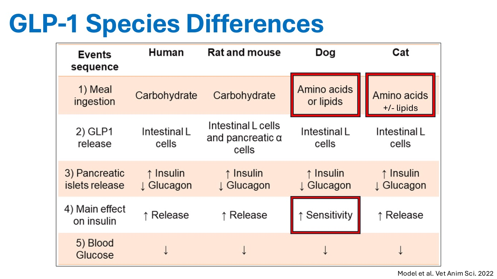
| 步驟 | 人 | 大鼠與小鼠 | 狗 | 貓 |
|---|---|---|---|---|
| 1）進食的刺激物 | 碳水 | 碳水 | 胺基酸或脂質 | 胺基酸（± 脂質） |
| 2）GLP-1 釋放 | 腸 L 細胞 | 腸 L 細胞與胰臟 α 細胞 | 腸 L 細胞 | 腸 L 細胞 |
| 3）胰島釋放 | 胰島素 ↑、升糖素 ↓ | 胰島素 ↑、升糖素 ↓ | 胰島素 ↑、升糖素 ↓ | 胰島素 ↑、升糖素 ↓ |
| 4）對胰島素的主要作用 | 釋放 ↑ | 釋放 ↑ | 敏感性 ↑ | 釋放 ↑ |
| 5）血糖 | ↓ | ↓ | ↓ | ↓ |
📷 現場🎤 Amylin 與升糖素
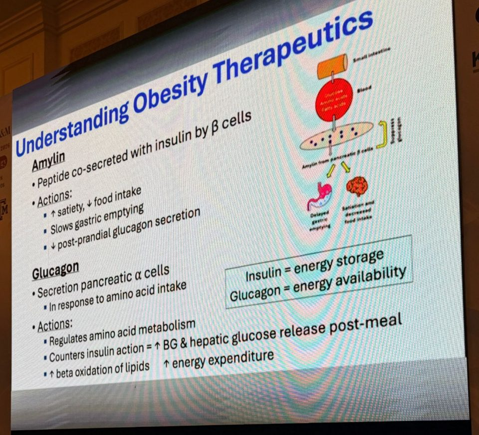
Amylin
- 由 β 細胞和胰島素一起分泌的胜肽
- 飽足感 ↑、進食 ↓
- 延緩胃排空
- 餐後升糖素分泌 ↓
升糖素（Glucagon）
- 胰臟 α 細胞在攝取胺基酸後分泌
- 調節胺基酸代謝
- 對抗胰島素：餐後血糖 ↑、肝臟釋放葡萄糖
- 脂質 β-氧化 ↑ → 能量消耗 ↑
- 🎤 人醫目前藥物還有其他重要成分。Amylin【更正】（逐字稿為 amelin）促效劑常和 GLP-1 併用。Amylin 和胰島素一起分泌，所以也由葡萄糖攝取驅動。它支持飽足感、減少餐後進食，延緩胃排空，並和餐後升糖素分泌有關（講義：降低餐後升糖素）。
- 🎤 升糖素由胰臟 α 細胞分泌，通常是回應胺基酸攝取。可以把胰島素想成促進能量儲存，升糖素促進能量可用，是胰島素的「對手表親」。它調節胺基酸代謝，透過餐後提高血糖和肝臟糖質新生來對抗胰島素，也增加脂質氧化，提高能量消耗。
14. Slentrol 與 GLP-1 受體促效劑
▾🎤 減重藥物總覽（Del Prato et al. 2021）
選擇性微粒體三酸甘油酯轉運蛋白抑制劑
- Slentrol®
腸泌素類療法
- GLP-1 促效劑
- GLP-1 ＋ GIP 促效劑
- GLP-1 ＋ GIP ＋ 升糖素促效劑（「三重促效劑」）
- GLP-1 ＋ amylin 促效劑
各成分的貢獻
- GLP-1：降低食慾
- GIP：增強減重效果
- 升糖素：增強食慾抑制＋增加能量消耗
- 🎤 已經上市給獸醫病患的一款藥最後沒有預期中成功，就是 Slentrol【更正】（逐字稿為 Slintrol），一種選擇性微粒體三酸甘油酯轉運蛋白抑制劑，名字很拗口。
- 🎤 然後是腸泌素類療法，接下來會舉最多例子。概括來說，GLP-1 是降低食慾的主要驅動者，GIP 幫助提升減重潛力，升糖素【更正】（逐字稿為 Gnuton）則是降低食慾和增加能量消耗。
🎤 Dirlotapide（Slentrol®）（Klonoff 2007）
- 選擇性微粒體三酸甘油酯轉運蛋白抑制劑；2007 年 FDA 核准用於過重 > 20% 的狗。
- 機轉：阻斷脂蛋白的組裝與釋放進入血液
- 阻斷乳糜微粒與 LDL 的生成
- 減少腸道脂肪吸收 = 糞便脂肪增加
- 抑制食慾
- 達到具統計意義的體重下降，約 11.8%。
- 副作用：軟便、腹瀉、嘔吐；嗜睡、厭食。
沒有被廣泛使用：飼主不喜歡寵物食慾下降、吃得少！！！
- 🎤 Slentrol 是獸醫最早的肥胖專用藥之一，2007 年在美國獲 FDA 核准，標示用於比理想體態過重至少 20% 的狗。
- 🎤 它阻斷脂蛋白組裝進入血流，阻斷乳糜微粒和 LDL 生成，減少腸道脂肪吸收，增加糞便排出的脂質。它也抑制食慾，而這正是它最後失敗的致命傷。
- 🎤 治療的動物體重下降約 12%，有統計意義。副作用包括糞便脂質增加、腹瀉、嘔吐；因為抑制食慾，部分病患出現厭食。
- 🎤 多數人認為它沒有普及，就是因為抑制食慾：飼主不喜歡動物吃藥後吃得少，就停藥了。這讓獸醫界學到，我們需要不影響食慾也能減重的療法。目前很多獸醫肥胖藥物的研發都是朝這個方向。
🎤 GLP-1 受體促效劑（Zomer et al. Biology 2024）
美國市售藥物
- Exenatide：Byetta®、Bydureon®、Bydureon BCise®
- Semaglutide：Ozempic®、Rybelsus®、Wegovy®
- Liraglutide：Victoza®、Saxenda®
- Dulaglutide：Trulicity®
造成減重的作用
- 胰島素分泌 ↑、胰島素敏感性 ↑
- 肝醣 ↑
- 飽足感 ↑、食慾 ↓
- 胃排空 ↓
- 效果可能隨時間減弱
- 🎤 這些是大多數人聽過的 GLP-1 促效劑【更正】（逐字稿為 dopamine receptor agonists）。講者不確定泰國有沒有這些藥，也不知道這裡是不是有和美國一樣煩人的廣告歌，這些是美國市售的藥。
🎤 GLP-1 促效劑的由來與重點
- 希拉毒蜥（Gila monster）毒液中的 exendin-4：
- 和天然 GLP-1 有 53% 同源性
- 是現代 GLP-1 藥物的藍圖
- 主要目的 = 讓身體準備好迎接即將進來的營養。
- 在糖尿病患，需要有功能的 β 細胞才能完全發揮：
- 這是為什麼研究集中在糖尿病貓，遠多於狗
- 獸醫的 GLP-1 藥物是和胰島素併用
- 主要好處在體重，不在血糖控制。
- 🎤 GLP-1 促效劑的起源是從希拉毒蜥【更正】（逐字稿為 kilomasturbinum）找到的分子，和天然 GLP-1 約 53% 相似。Exenatide 成為所有現代肥胖藥物的藍圖。
- 🎤 GLP-1 的主要目的，是在進食時告訴身體準備好迎接即將來的營養。
- 🎤 這些療法最初針對糖尿病，需要有一些功能的 β 細胞，所以獸醫常以貓為對象，而不是胰島素缺乏的狗。
- 🎤 很多研究的病患本來就在打胰島素，所以在獸醫糖尿病患，它不一定是能省胰島素的藥。多數藥物主要達成的效果在體重，不一定在血糖控制。
🎤 GLP-1 在狗貓的使用（Model et al. 2022）
| 情境 | 結果 |
|---|---|
| 單獨給糖尿病狗 | 沒有作用 |
| 糖尿病狗＋胰島素 | 胰島素敏感性 ↑、脂肪分解 ↓ |
| Exenatide，實驗性「糖尿病前期」狗模型 | 減重，而且不影響食慾 |
| 打胰島素的糖尿病貓 | 胰島素需求 ↓、血糖變異度 ↓；抑制升糖素（糖尿病貓常有升糖素偏高） |
- 🎤 單獨給糖尿病狗沒有明顯效果；和胰島素併用則增加胰島素敏感性、減少脂肪分解。
- 🎤 Exenatide 給實驗性糖尿病前期狗模型，誘發減重【更正】（逐字稿為 reduces weight loss），而且不影響食慾。這很令人興奮，可能支持狗的肥胖藥物應該走「不抑制食慾」的模式。
- 🎤 給打胰島素的糖尿病貓，能降低胰島素需求和血糖變異度，也抑制升糖素，而糖尿病貓常有較高的升糖素。講者提到很多貓的研究是「我們自己的 Dr. Mon」做的（逐字稿人名無法確認）。
- 🎤 短效 exenatide：對緩解率或胰島素劑量沒有影響，但相較於只用 glargine【更正】（逐字稿為 largely）治療、整體體重增加的貓，它能誘發減重。
- 🎤 Exenatide ER（緩釋型）：研究結果顯示一個月給一次可能就有效，對飼主配合度是很大的幫助。它改善了葡萄糖耐受性，緩解率【更正】（逐字稿為 emission rates）和血糖控制有些微改善的趨勢。
- 🎤 研究中最擔心的是開始用藥的時機太晚，貓已經沒有功能性 β 細胞，這可能是評估變數沒有達到統計意義的原因之一。另外也不知道高血糖造成的胰島素阻抗會如何影響藥物反應。不過研究期間沒有嚴重副作用。
- 🎤 Liraglutide 也在健康貓研究過，能誘發減重，但有明顯的腸胃道副作用，所以不建議用在貓。
🎤 貓的 GLP-1 臨床試驗
Cornell 貓肥胖臨床前試驗
- 評估新型 GLP-1 Fc 融合蛋白 → Akston AKS-562c
- 每週一次皮下注射
Okava MEOW-1 貓肥胖研究
- 評估 exenatide → OKV-119
- 皮下植入物，持續 6 個月
- 🎤 目前有幾個專門針對獸醫 GLP-1 藥物的臨床試驗，都是貓的減重藥。Cornell 大學在評估一個接上 Fc 融合蛋白【更正】（逐字稿為 best effusion protein）的新型 GLP-1，延長在體內的作用時間，每週皮下注射一次。
- 🎤 還有 MEOW-1 研究，名字取得很好，評估 exenatide 分子，是可以維持 6 個月的皮下植入物。這些都還在進行，目前沒有結果。
- 🎤 講者個人知道至少一家公司在開發 GLP-1 加上其他促效劑的複方藥。未來幾年這方面可能會快速增加，會看到更多藥物進入試驗、上市。
15. 雙重與三重促效劑、未來展望
▾🎤 Tirzepatide（Zepbound® 與 Mounjaro®）：GLP-1 ＋ GIP
- GLP-1 與 GIP 受體促效劑。和內生性 GIP／GLP-1 比較的效力：GIP 相同、GLP-1 低 20 倍。
- 藥物結構主要以 GIP 為基礎；每週給藥一次。
- 人的糖尿病：效果比單用 GLP-1 或基礎胰島素好
- 比 liraglutide 減更多體重、血糖控制更好
- 最多 57% 減掉 ≥ 10% 體重；semaglutide 只有 24%
- 非糖尿病的人：減掉約 18% 體重。
- 副作用：噁心、嘔吐、腹瀉、便秘、腹痛；胃食道逆流、掉髮、過敏；大鼠可能出現甲狀腺腫瘤。約 11% 的人因副作用必須停藥。
- 🎤 第一個是 tirzepatide，第一個 GLP-1 ＋ GIP【更正】（逐字稿為 Jip）受體促效劑複方，美國商品名 Zepbound 和 Mounjaro【更正】（逐字稿為 Monjera）。
- 🎤 和內生性的比，GIP 效力差不多，GLP-1 低約 20 倍。結構主要以 GIP 分子為基礎。
- 🎤 每週給一次。在人比單用 GLP-1 或單用基礎胰島素效果更好；和只有 GLP-1 促效劑的 liraglutide 比，減重更多、血糖控制更好。最多 57% 的病患至少減掉 10% 體重，semaglutide（Ozempic）只有約 24%。
- 🎤 非糖尿病的人約減掉 20% 的起始體重（講義寫約 18%）。副作用相當明顯，約 10% 的人因此停藥。早期大鼠臨床前研究也有疑慮，部分大鼠癌症風險增加，特別是甲狀腺癌。
🎤 Tirzepatide 在健康 Beagle（Dong et al. 2024）
| 參數 | 數值 |
|---|---|
| 劑量 | 10 nmol/kg SC |
| Cmax | 344 ng/mL（± 10） |
| Tmax | 14 小時（± 8.74） |
| 半衰期 | 93.8 小時（± 8.61） |
- 🎤 獸醫目前只有健康 Beagle【更正】（逐字稿為 healthy vehicles）的藥動／藥效資料，從未被評估當作減重藥，所以沒有效果數據可比較。
🎤 Amycretin（zenagamtide）與 CagriSema：GLP-1 ＋ amylin
- GLP-1 與 amylin 促效劑；amylin 部分是 amylin ＋ 抑鈣素受體雙重促效（DACRA）。
- CagriSema = cagrilintide ＋ semaglutide 複方：68 週後減重 20.4%，semaglutide 單用 14.9%、cagrilintide 單用 11.5%。
- Amycretin = 單一胜肽，同時具 GLP-1 與 DACRA 促效：
- 受體效力比 semaglutide 和 cagrilintide 都高
- 每週皮下或每天口服
- 皮下最多減重 24.3%；口服最多 13.1%
- 噁心、嘔吐是常見副作用。
- 🎤 也有 GLP-1 和 amylin 受體促效劑的組合：amycretin 和 CagriSema【更正】（逐字稿為 amicryptin、cardi sima）。Amylin 部分是 amylin 加抑鈣素受體的雙重促效，常叫 DACRA：主要是 amylin 促效，但也會同時刺激抑鈣素受體。
- 🎤 第一個藥是 amylin 促效劑加上 semaglutide 的組合，在人約減重 20%，比各成分單用效果好，支持雙重療法可能比單一藥物更有效。
- 🎤 另一個是 amycretin，單一胜肽同時表現 GLP-1 和 DACRA 促效，受體效力比兩個單獨成分和前一個藥都高。可以每週皮下或每天口服，皮下在人效果較好，約減重 25%，口服約 13%。
- 🎤 人的常見副作用是噁心嘔吐，但這些通常較短暫（逐字稿接著說「常導致需要停藥」，和「這是相較其他藥物的優點」矛盾，推測原意是較少導致停藥），如果獸醫未來用這類藥可能有幫助。
🎤 Retatrutide（LY3437943）：三重促效劑（Jastreboff et al. NEJM 2023）
- GLP-1 ＋ GIP ＋ 升糖素受體促效劑：
- GLP-1 ＋ GIP 抵銷升糖素的升血糖作用
- 對 GLP-1 與升糖素受體效力較低，對 GIP 受體效力較高
- 治療 48 週，retatrutide vs 安慰劑：
| 平均減重 | 減 > 5% | 減 > 10% | 減 > 15% | |
|---|---|---|---|---|
| Retatrutide | 24.2% | 100% | 93% | 83% |
| 安慰劑 | 2.1% | 27% | 9% | 2% |
- 表現優於雙重與單一促效劑：減重更多、血糖控制更好。
- 🎤 最後是三重促效劑 retatrutide【更正】（逐字稿為 Breda tri，講者自己也念不太出來），GLP-1、GIP 加上升糖素【更正】（逐字稿為 GON）受體促效。
- 🎤 有趣的是，GLP-1 和 GIP 的組合用來抵銷升糖素的升血糖作用，避免用藥時出現高血糖。GIP 部分是主要的作用驅動者，所以對 GIP 的效力比對 GLP-1 或升糖素受體高。
- 🎤 人治療 48 週，整體約減重 20%（講義 24.2%）。更有趣的是有相當多人減掉大量體重：所有治療者都至少減 5%，約 83% 減掉超過 15%。和其他肥胖藥物研究比，這麼高比例的病患能達到這種程度，是很大的勝利。
- 🎤 和之前的研究一樣，它勝過雙重和單一藥物療法，支持複方療法很可能是肥胖藥物的未來。
🎤 無限的未來可能
- 未來 3–5 年很可能會有很多新東西！
- 許多新療法正在為獸醫探索，包括糖尿病用藥和專門的肥胖治療。
- 🎤 很多重點放在藥物開發，特別是獸醫的雙重和三重促效劑療法。好的是，這些公司不只聚焦在糖尿病治療，很多也專門針對輔助獸醫的減重。
- 講者聯絡方式：abugbee@tamu.edu
16. Q&A
▾Q：如果動物有多種共病，例如心臟病或腎病，這些病本身會造成肌肉流失和體重下降。這種動物還要當作肥胖、幫牠減重嗎？隨著時間，疾病本身就會讓體重下降。
- 🎤 問題是：肥胖病患發生了也會造成體重下降的共病，要在這種疾病狀態下減重。
- 🎤 在人的類似情況，常建議增加活動量，在減重的同時促進（肌肉）增加（逐字稿為 weight gain，依上下文應指保留肌肉），抵銷疾病自然造成的流失。
- 🎤 營養組成也可能要改變。例如腎病當然要限制蛋白質；這時熱量、脂肪和纖維對減重的重要性，可能比蛋白質更高。
- 🎤 所以可能會選較低脂、較低熱量的飲食，加上運動，讓減掉的是脂肪而不是肌肉；只靠改飲食減重，可能會造成肌肉流失。
補充：這呼應 p.29「先針對最先會要命的病」。有心臟病或 CKD 的病患，追蹤時要同時看 BCS 和 MCS，體重下降不一定是好事，要確認減掉的是脂肪。
🎤 主持人：謝謝 Bugbee 醫師。休息到 12:35，接著是座談。
Take-home、更正表與參考資料
▾💡 Take-home（整理者整理）
- 肥胖是慢性疾病：由遺傳、環境、生物學與大腦化學驅動，肥胖驅動過食。
- 評估：BCS 6–7 過重、8–9 肥胖；MCS 依最嚴重部位、用文字分級。
- 大腦與脂肪激素：多巴胺與菸鹼受體下調讓人必須吃更多；leptin 阻抗造成高 leptin ＋ 高食慾；adiponectin 隨肥胖下降。
- 治療順序：先篩檢共病（甲狀腺功能低下）→ 每週減 1–2%（目標體重計算熱量、罐頭、高蛋白高纖、克秤）→ 飼主教育 → 藥物輔助。
- 飼主溝通：反覆提醒、明確建議、堅定但有彈性、零食 < 10%、兩週後追蹤。
- 藥物：Slentrol 因抑制食慾而失敗；GLP-1 在貓有試驗中；人醫的雙重、三重促效劑效果最好，未來 3–5 年值得關注。
💡 講義與錄音的差異、需要注意的地方
| 頁 | 差異或問題 | 說明 |
|---|---|---|
| p.1–3 | 沒有錄音 | 錄音從 p.4 中段開始 |
| p.15 | 菸鹼受體 | 講義：肥胖造成受體去敏感化；逐字稿一度說成「肥胖者表現增加」，後面又說下調，以講義為準 |
| p.20 | Adiponectin 的作用 | 講義：抗細胞凋亡、抗纖維化；錄音：抗發炎、抗血栓 |
| p.25 | 甲狀腺功能低下的比例 | 錄音說中度肥胖病患超過一半；講義無此數字，與一般文獻不符，引用前請確認 |
| p.32 | 兩組都改善的項目 | 講義：生活品質、糖尿病臨床評分；逐字稿為 model diet score |
| p.33 | Merlin 的血檢 | 講義：緊迫性高血糖；錄音：stress leukogram |
| p.40 | Amylin 與升糖素 | 講義：amylin 降低餐後升糖素；錄音說成「和餐後升糖素分泌有關」 |
| p.46 | Exenatide 貓研究細節 | 短效／ER 的結果、liraglutide 在健康貓只出現在錄音，講義沒有 |
| p.49 | 非糖尿病人的減重 | 講義約 18% 體重；錄音約 20% |
| p.49 | 停藥比例 | 講義約 11%；錄音約 10% |
| p.51 | Amycretin 皮下減重 | 講義 24.3%；錄音約 25% |
| p.52 | Retatrutide 平均減重 | 講義 24.2%；錄音約 20% |
逐字稿轉文字錯誤一覽
| 逐字稿寫的 | 正確內容 |
|---|---|
| addaxial muscles | epaxial muscles（軸上肌） |
| adolescent cats | （應為成年貓 adult cats） |
| mechanoreceptors | nicotinic receptors |
| Adipines / BMPs / out of the kind | adipokines |
| adrenocortin / abstinence | adiponectin |
| run from a line | run from a lion |
| AHA nutrition guidelines | AAHA nutrition guidelines |
| reverse muscle | （應為 reserve／保留的肌肉） |
| Martin Morris Institute | Mark Morris Institute |
| model diet score | DM clinical score |
| blonde-haired cat | Ragdoll（布偶貓） |
| stress leukogram | （講義：stress hyperglycemia） |
| low tart | low carb |
| Exit for Korean | （不明；上下文為脂肪含量） |
| Hills R D | Hill's r/d |
| Glyco Advanced | Royal Canin GlycoAdvanced |
| amelin | amylin |
| Slintrol | Slentrol（dirlotapide） |
| ingredient therapies | incretin therapies |
| Gnuton | glucagon |
| dopamine receptor agonists | GLP-1 receptor agonists |
| A kilomasturbinum | Gila monster（希拉毒蜥，exendin-4） |
| reduces weight loss | induced weight loss |
| Dr. Mon | （人名無法確認） |
| largely treated cats | glargine-treated cats |
| emission rates | remission rates |
| University of Cornell | Cornell University |
| best effusion protein | Fc-fusion protein |
| Meow One / a xenotide | MEOW-1／exenatide（OKV-119） |
| Zepbound and Monjera | Zepbound and Mounjaro |
| Jip | GIP |
| healthy vehicles | healthy Beagles |
| amicryptin and cardi sima / acretin | amycretin and CagriSema |
| DAAKRA | DACRA |
| Breda tri | retatrutide |
| GON receptor | glucagon receptor |
| dietary diabetic therapy | （應為 diabetic therapy） |
| Doctor Bappy / Dr. Boddy | Dr. Bugbee |
| Will be above bullet point five. To surgical options | （不明；應指清單第 5 項手術在獸醫不適用） |
參考資料
Bugbee A. Obesity, Adipokines, & Future Diabetic Therapies. VET-KU × Texas A&M IM Conference, 2026-10-06（講義 54 頁與課堂逐字稿「完整記錄」PDF）。
Zomer et al. Biology. 2024.
Sunita et al. Obesity Science & Practice. 2026.
Association for Pet Obesity Prevention, 2022.
German AJ, et al. Vet Rec. 2025（臨床肥胖與臨床前肥胖的定義）。
German AJ, et al. Vet J. 2012（肥胖與壽命）。
Cline MG, Burns KM, Coe JB, et al. 2021 AAHA Nutrition and Weight Management Guidelines for Dogs and Cats. J Am Anim Hosp Assoc. 2021;57(4):153–178.
World Pet Obesity Association（WPOA）Muscle Condition Score.
Ata RN, et al. Obes Facts. 2010（體重偏見）。
Wang GJ, et al. Brain dopamine and obesity. Lancet. 2001.
Rezvani et al. J Physiol. 2024（脂肪細胞增生與肥大）。
Tilg H, et al. Nat Rev Immunol. 2025（adiponectin 與 leptin）。
Halaas JL, et al. Science. 1995；Park et al. Endocrinology. 2008；Radin MJ, et al. Vet Clin Pathol. 2009（leptin）。
Jørgensen FK, et al. A two-center, randomized controlled trial to determine the effect of 12 weeks of caloric restriction with a novel diet in overweight cats with diabetes mellitus. J Vet Intern Med. 2026 Mar 2;40(2).
Mark Morris Institute Nutrition Guide. markmorrisinstitute.org/nutrition_guide
Obesity Reviews. 2021;23(2). doi:10.1111/obr.13372（肥胖治療藥物作用目標圖）。
Model et al. Vet Anim Sci. 2022（GLP-1 在狗貓）。
Del Prato S, et al. Obesity Pharmacotherapy. 2021.
Klonoff D. J Diabetes Sci Technol. 2007（dirlotapide／Slentrol）。
Dong et al. Bioorg Med Chem. 2024（tirzepatide 在 Beagle 的 PK-PD）。
Jastreboff AM, et al. Triple-hormone-receptor agonist retatrutide for obesity. N Engl J Med. 2023.